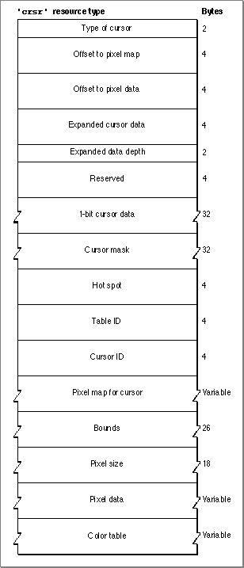

The Color Cursor Resource
You can use a color cursor resource to define a colored cursor to display in your application. A color cursor resource is a resource of type'crsr'. All color cursor resources must be marked purgeable and must have resource IDs greater than 128. You use theGetCCursorfunction (described on page 8-24) to obtain a color cursor stored in a'crsr'resource. Color QuickDraw reads the requested resource, copies it, and then alters the copy before passing it to the application. Each time you callGetCCursor, you get a new copy of the cursor. This means that you should callGetCCursoronly once for a color cursor, even if you call theSetCCursorprocedure many times.This section describes the structure of this resource after it has been compiled by the Rez resource compiler, available from APDA. However, you typically use a high-level utility such as the ResEdit application to create
'crsr'resources. You can then use the DeRez decompiler to convert your'crsr'resources into Rez input when necessary.The compiled output format for a
'crsr'resource is illustrated in Figure 8-9.Figure 8-9 Format of a compiled color cursor (
'crsr') resource
The compiled version of a'crsr'resource contains the following elements:
- Type of cursor. A value of $8001 identifies this as a color cursor. A value of $8000 identifies this as a black-and-white cursor.
- Offset to
PixMaprecord. This offset is from the beginning of the resource data.- Offset to pixel data. This offset is from the beginning of the resource data.
- Expanded cursor data. This expanded pixel image is used internally by Color QuickDraw.
- Expanded data depth. This is the pixel depth of the expanded cursor image.
- Reserved. The Resource Manager uses this element for storage.
- Cursor data. This field contains a 16-by-16 pixel 1-bit image to be displayed when
the cursor is on 1-bit or 2-bit screens.- Cursor mask. A bitmap for the cursor's mask. QuickDraw uses the mask to crop
the cursor's outline into a background color or pattern. QuickDraw then draws the cursor into this shape.- Hot spot. The cursor's hot spot.
- Table ID. This contains an offset to the color table data from the beginning of the resource data.
- Cursor ID. This contains the cursor's resource ID.
- Pixel map. This pixel map describes the image when drawing the color cursor. The pixel map contains an offset to the color table data from the beginning of the resource.
- Bounds. The boundary rectangle of the cursor.
- Pixel size. The number of pixels per bit in the cursor.
- Pixel data. The data for the cursor.
- Color table. A color table containing the color information for the cursor's pixel map.